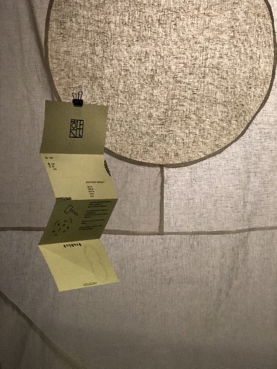

‘혼명’은 ‘혼자’와 ‘명절’의 합성어로,
“혼자서 명절을 쇨 수는 없을까”라는 물음에서 출발한 브랜드입니다.
대부분 20대에게 명절은 맛있는 음식을 먹고,
용돈을 받으며 바쁜 일상 중 휴식을 취할 수 있는 시간이 됩니다.
그러나 그 이면에는 부모님의 장시간 운전, 여성의 노동 등
'누군가의 희생'이 있습니다.
20대 스스로 명절 문화를 주체적으로 향유할 수는 없을까요?
이에 직접 명절 음식을 만들어 먹으며
주체적으로 명절 문화를 향유해볼 수 있는
‘혼자 명절 쇠기 키트’를 기획했습니다.
사정이 있어 함께 명절을 쇠지 못 할 때,
어색한 친척과의 만남이 어려울 때,
누군가의 노동 없이 명절을 쇠고 싶을 때
이 키트를 직접 구매해서 사용하거나
마음을 전하고 싶은 이에게 선물할 수 있습니다.
동시에, 명절 음식을 먹으며
왜 이 명절에는 이 음식을 먹는지
생각해볼 수 있는 엽서와 레시피를 함께 준비했습니다.
‘혼자 명절 쇠기 키트’와 함께
20대의 주체적 명절 쇠기를 경험해보시는 건 어떨까요?
Jiwon Sung_
Seoul Natl’ Univ.
Department of Design
(Industrial Design)
Jimyung Woo_
Seoul Natl’ Univ.
Department of Design
(Visual Communication Design)